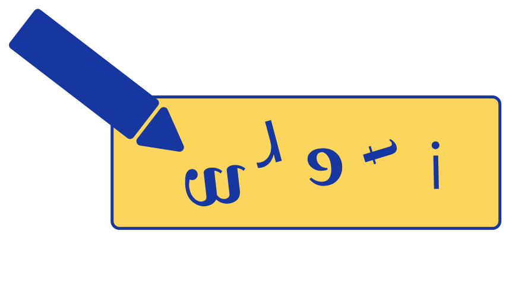

What is aphasia?
Damage to certain parts of the brain can lead to aphasia.
People with aphasia have difficulty with one or more of the following:
speaking
reading

writing

understanding
speech
using
numbers
Common causes of aphasia include a stroke, brain injury or brain tumour.
Aphasia does not affect a person's intelligence.